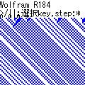
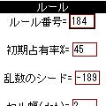

| アプリ名 | スクリーンショット | 説明 | iアプリ | Vアプリ | EZアプリ | |
|---|---|---|---|---|---|---|
| ウォルフラムのセルオートマトン |  |  | Mathematica の作者でもある, S. Wolfram の定義した256種類の基本セルオートマトン http://www.stephenwolfram.com/publications/articles/ca/84-universality/ について, ルール番号を入力するとそれに応じたシミュレーションを実行します．描画の遅い端末の場合，セル幅を大きくとるか，待ち時間を調節するかしてください．基本セルオートマトンの解説として, http://obog.ome.meisei-u.ac.jp/~tuchiyaob/sell.html や吉永良正「複雑系」とは何か 等があります．ソースの大部分を共有するiアプリ/Vアプリ/EZアプリ版があります．龍谷大学理工学部数理情報学科の授業で使用しています． | メールでURL送る JAMファイルのURL | メールでURL送る | メールでURL送る |